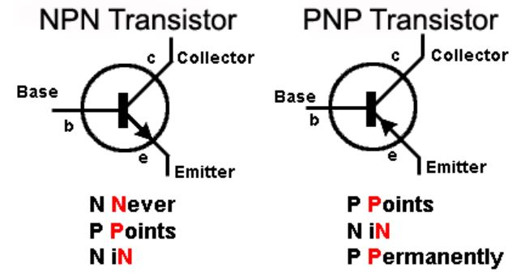

Pengertian
Pengertian transistor adalah komponen elektronika yang ditemukan di berbagai rangkaian dan digunakan sebagai saklar, penguat sinyal, osilator, modulator dan sebagainya.
Hampir semua barang elektronik menggunakan sebuah perangkat transistor untuk digunakan di berbagai rangkaian, misalnya untuk televisi, computer, dan audio.
Bahan pembuat transistor terdiri dari bahan semi konduktor seperti galium arsenide, silikon, atau germanium yang merupakan elektroda aktif.
Transistor memiliki 3 pin terminal yaitu emitor, basis, dan kolektor. Arus kecil pada satu terminal digunakan untuk membangkitkan arus besar pada terminal yang tersisa.
Transistor memiliki dua sambungan PN yaitu sambungan kolektor-basis untuk bias mundur dan sambungan basis emitor untuk bias maju.
Fungsi Transistor
1. Transistor sebagai Saklar
Transistor dapat digunakan sebagai saklar solid state. Jika transistor dioperasikan pada daerah saturasi maka transistor bertindak sebagai saklar tertutup dan ketika dioperasikan pada daerah cut off maka transistor berperilaku sebagai saklar terbuka. Transistor beroperasi sebagai sakelar solid state Single Pole Single Throw (SPST).
2. Transistor sebagai penguat (amplifier)
Transistor bertindak sebagai penguat dengan meningkatkan kekuatan sinyal yang lemah. Tegangan bias DC yang diterapkan pada sambungan basis emitor, membuatnya tetap dalam kondisi bias maju. Bias maju ini dipertahankan terlepas dari polaritas sinyal.
3. Transistor sebagai osilator
Transistor dapat dioperasikan sebagai osilator untuk menghasilkan osilasi tak teredam terus menerus dari frekuensi yang diinginkan jika tangki (atau berosilasi) dan rangkaian feedback adalah properti yang terhubung dengannya. Semua osilator dengan nama yang berbeda memiliki fungsi yang sama yaitu mereka menghasilkan output yang tidak teredam terus menerus.
Simbol Transistor
Dari simbol transistor diatas bisa Kita lihat bahwa perangkat elektronika ini memiliki dua dioda PN yang saling berhubungan.
Dua dioda PN tersebut terdiri dari sambungan kolektor-basis untuk bias mundur dan sambungan basis emitor untuk bias maju.
Dari sambungan tersebut, Transistor memiliki tigan terminal yaitu terminal bernama emitor, basis, dan kolektor.
- Kolektor : Pada terminal ini arus mengalir melalui kolektor ke emitor yang dikendalikan oleh basis.
- Emitor : Pada terminal ini ketika tegangan basis memungkinkan, arus mengalir melalui kolektor ke emitor.
- Basis : Terminal ini berfungsi sebagai gatekeeper yang menentukan seberapa besar arus yang diperbolehkan mengalir melalui rangkaian kolektor-emitor. Ketika tegangan diterapkan ke basis, arus dibiarkan mengalir.
Kedua jalur atau sambungan arus tersebut penting dalam transistor:
- Kolektor-emitor : Arus utama yang mengalir melalui transistor. Tegangan yang ditempatkan melintasi kolektor dan emitor sering disebut sebagai Vce, dan arus yang mengalir melalui jalur kolektor-emitor disebut Ice.
- Basis-emitor : Jalur arus yang mengontrol aliran arus melalui jalur kolektor-emitor. Tegangan melintasi jalur basis-emitor disebut sebagai VBE dan kadang-kadang juga disebut tegangan bias. Arus yang melalui jalur basis emitor disebut IBE.
Video Tentang Transistor